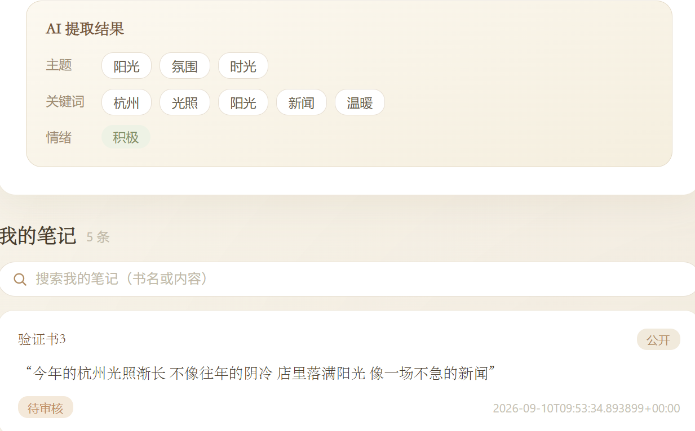
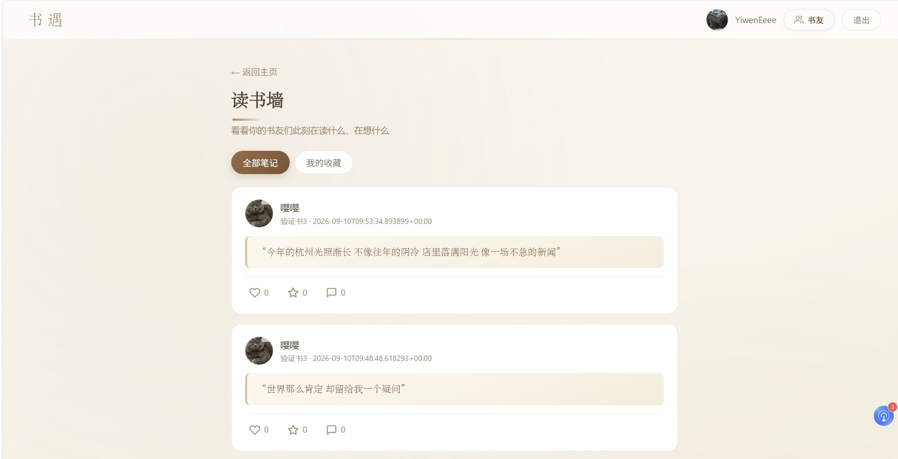

← 返回
书遇 · 匿名书友匹配社区
用读书笔记匹配同频者的匿名社交应用：上传摘录 → 向量相似度找最接近的人 → AI 写一句推荐语牵线 → 成为书友。
三人小组 · 创新创业实践
我的角色：产品构思 / 页面设计 / 前端开发
Vue 3 + Vite
2026.09
扫码体验交互演示
静态页面 + 示例数据，可切换读书墙 / 匹配 / 我的，并模拟一次上传与 AI 提取。
或在浏览器中打开
01
问题：读书 App 只帮找书，不帮找人
- 读完一本书满肚子话，朋友圈没人懂你摘下的那一句。
- 想聊真实的读后感，又不想暴露身份——实名读书群让人不敢开口。
- 现有产品都在做「找书」「管理书单」，没有人用内容本身帮你找人。
上传读书笔记→
内容相似度匹配→
AI 推荐语牵线→
成为书友
这是课程内的小组实践项目，没有做真实用户测试；验证方式是三人内部验收与课程答辩的现场演示，成果为可运行的完整前后端。
02
我的角色：页面、交互与 28+ 接口联调
| 我（前端） | 页面与交互实现（Vue 3 + Vite）、前后端联调（28+ 接口）、AI 提取结果与推荐语的展示 |
|---|
| 队友（后端） | FastAPI 接口、SQLite 数据模型、管理员后台 |
|---|
| 队友（AI） | Embedding、NumPy 向量检索、RAG 链路 |
|---|
三方靠统一接口契约串联：前端与后端通过 HTTP 对接，响应统一为 {code, data, message}；笔记交给 RAG 服务做向量化与匹配。

我的笔记 · 上传后即时显示 AI 提取的主题 / 关键词 / 情绪，并带审核状态（待审核 / 已通过），学生可自行决定是否公开

读书墙 · 只展示已接受书友的公开笔记，支持点赞、收藏、评论；匿名靠昵称与头像，不暴露真实邮箱
前端共 7 个模块：用户系统、书单管理、笔记上传、灵魂共振匹配、读书墙、书友关系、管理员后台。
03
一条笔记的闭环
上传笔记→
AI 提取主题 / 关键词 / 情绪→
存入数据库→
管理员审核→
上读书墙 / 进匹配池→
匹配到同频书友
审核是产品上的一道闸：未通过的笔记不会出现在墙上，也不会进入匹配池。前端在每个环节都要给出明确状态，避免用户不知道自己的笔记卡在哪一步。
04
匹配：为什么用轻量 RAG
bge-m3 向量化→
NumPy 余弦相似度→
低于 55% 过滤→
DeepSeek 生成推荐语
笔记量级小、向量不多，一次矩阵乘法就能算完全部相似度，不需要引入 FAISS / Milvus 这类向量库。相似度分档决定推荐语语气：越接近，话越笃定。
05
和 AI 一起迭代
例 1｜AI 把占位符「B」当真名写进推荐语
提示词里用 A / B 指代双方，模型直接把「B」输出成了对象名字。修复：把双方真实昵称传进提示词、禁止输出占位符，改后输出「山间读者，你和松间读者几乎说到一块去了」。
例 2｜标签照抄原文，情绪恒为「中性」
主题 / 关键词输出成整句原文切片，情绪几乎全被判成「中性」，等于没提取。
修复后 · 标签收敛成抽象概念词（世界 / 疑问 / 困惑 / 矛盾），情绪能真实区分积极 / 中性 / 消极。
做法是两头夹：提示词限定「1~4 字抽象概念词、情绪只能三选一」，后端再做清洗（去切片、去重、归一情绪）。只改提示词不够，只清洗也不够——这是我在这两个例子里最大的收获。
06
已知短板
- 匹配效果依赖 AI 质量 → 需要调优 embedding 模型与相似度阈值。
- 读书墙靠 HTTP 轮询，非实时 → 下一步可改 WebSocket 推送。
- 只有摘录，没有全文阅读 → 需接入电子书源。
- 没有真实用户，指标全部来自内部演示，不做效果类承诺。